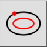
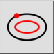
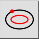
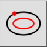

Parallelle curve (door punt)
Werkbalk / icoon:
 

Menu: Tekenen > Ellips > Parallelle curve (door punt)
Sneltoets: E, G
Opdrachten: ellipseoffsetthrough | eg
Dit is een automatische vertaling.
Werkbalk / icoon:
 

Menu: Tekenen > Ellips > Parallelle curve (door punt)
Sneltoets: E, G
Opdrachten: ellipseoffsetthrough | eg
Met dit functie kunt u curven maken die evenwijdig zijn aan een ellips en door een bepaald punt gaan.